Дизайн приложения Eluno
Дизайн Eluno на основе выбранного второго варианта: лавандовые плитки, понятные состояния и управление в одно касание. Для Fold — один экран с двумя независимыми областями.
Виджеты Android: размеры, темы и Fold →
Открыть тёмный вариант приложения →
Макеты приложения
Нажмите на экран, чтобы открыть оригинал. Это визуальные ориентиры; интерактивная версия уточняет размеры, переносы текста и поведение элементов.
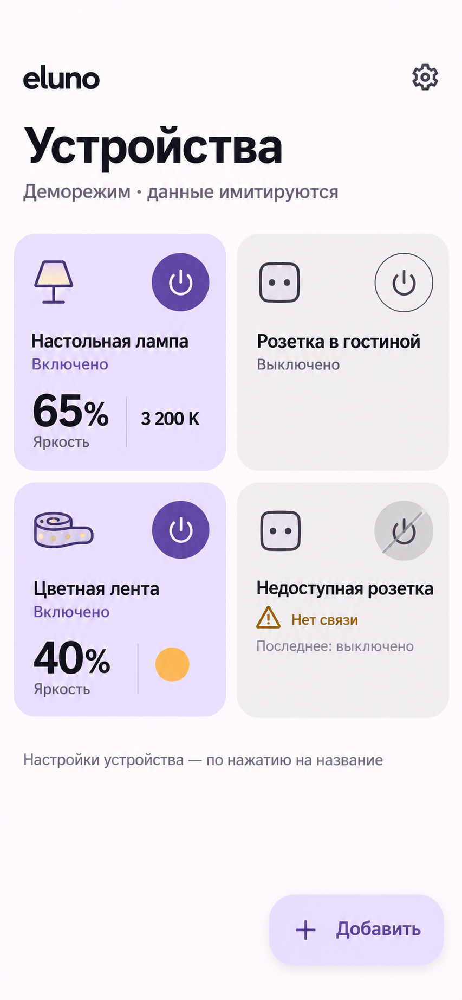
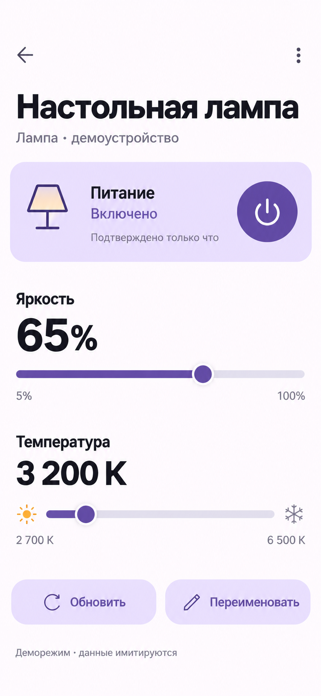
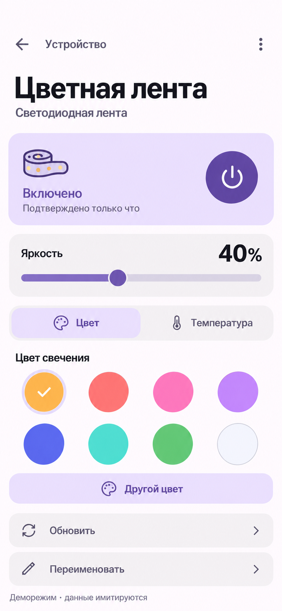
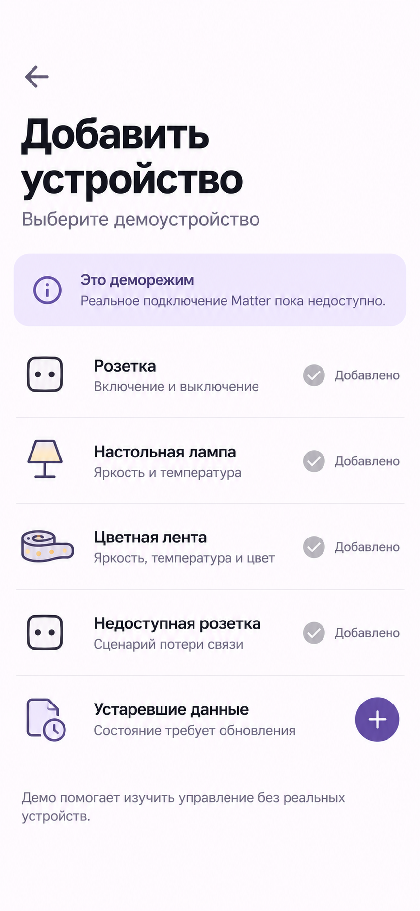
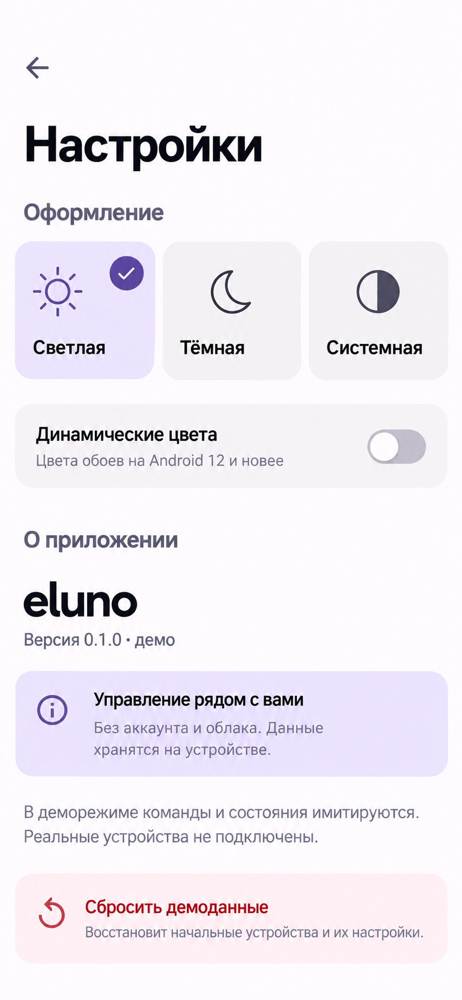
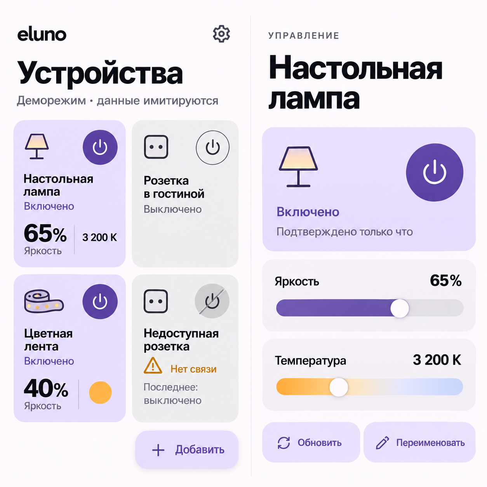
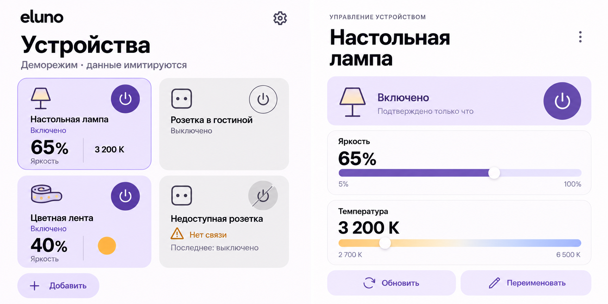
Экраны работающего прототипа
Снимки из браузера. Доступны питание, яркость, температура, цвет, переименование, добавление, удаление и настройки. Формат устройства переключается в правом верхнем углу просмотрщика.
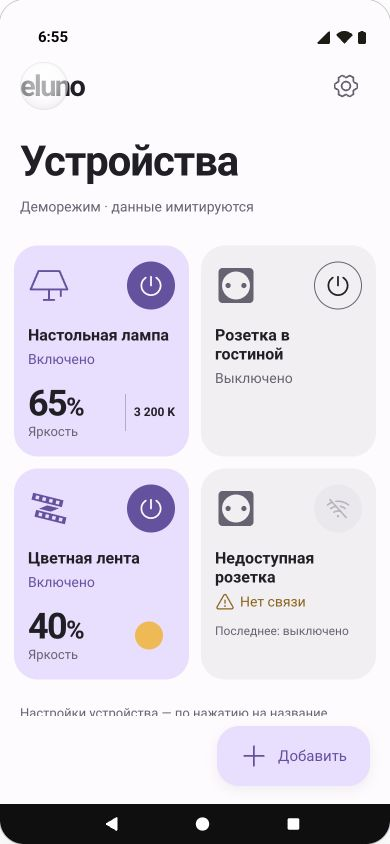
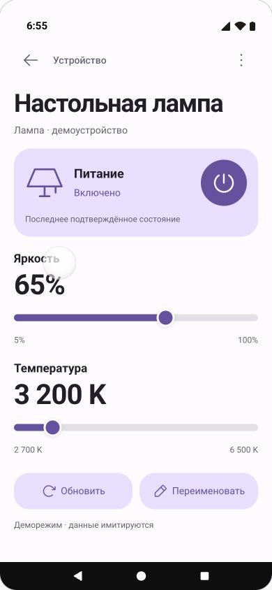
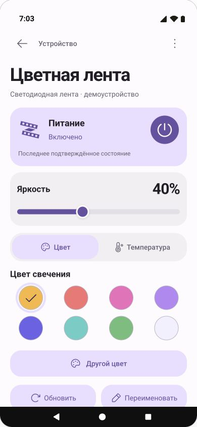
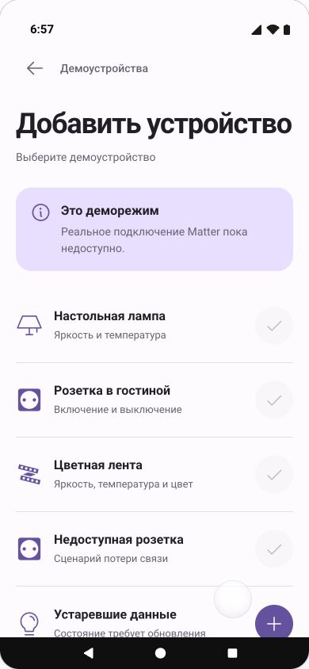
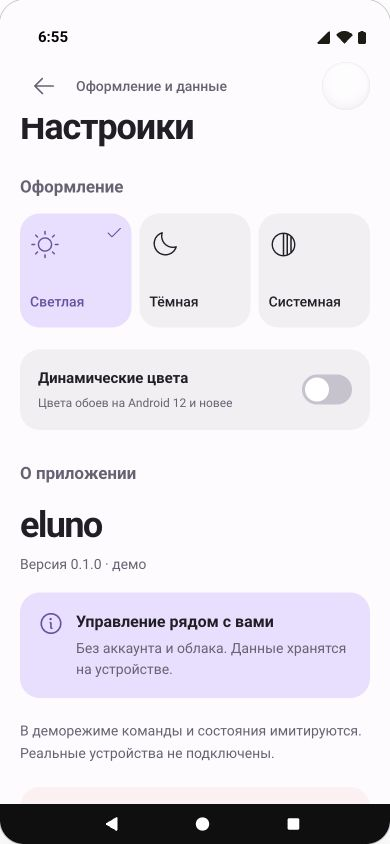
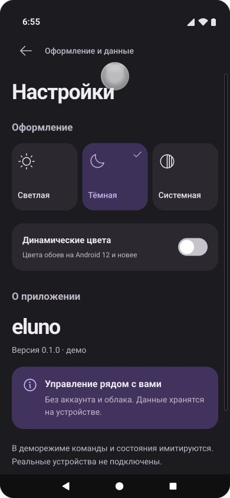
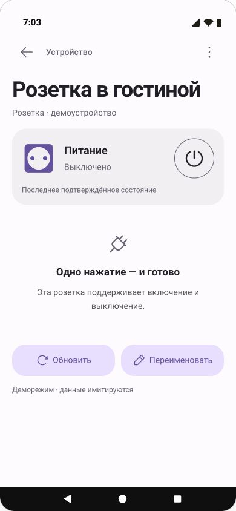
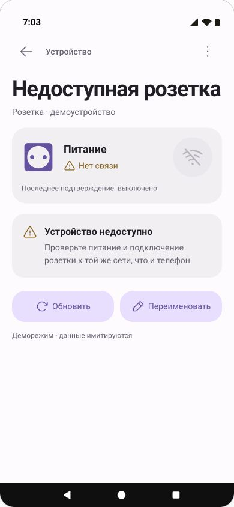
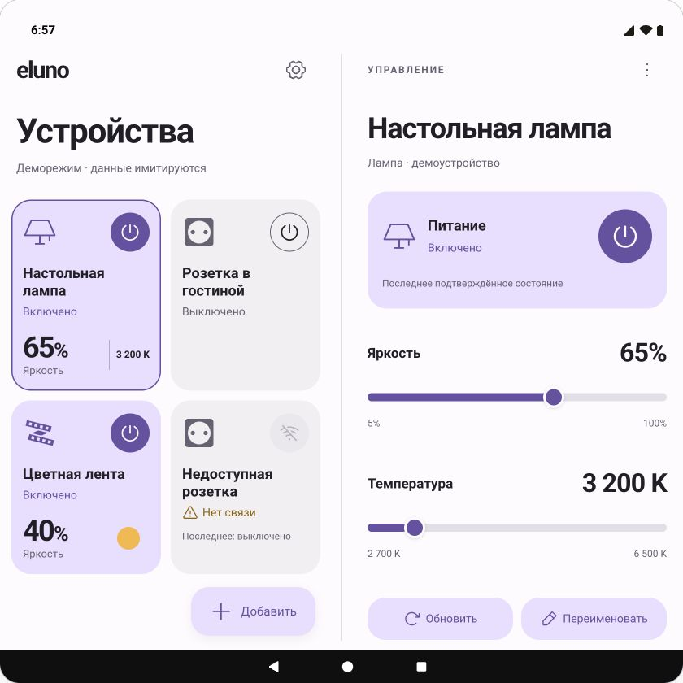
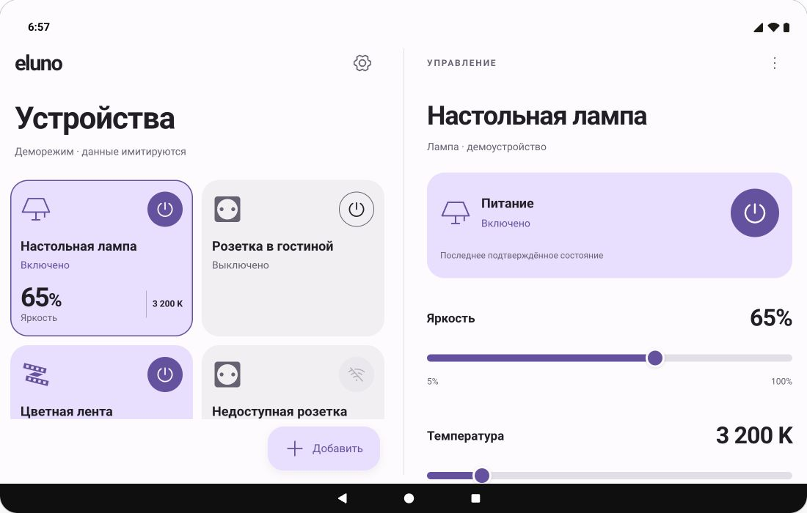
Тёмный вариант
Открыть интерактивную тёмную тему
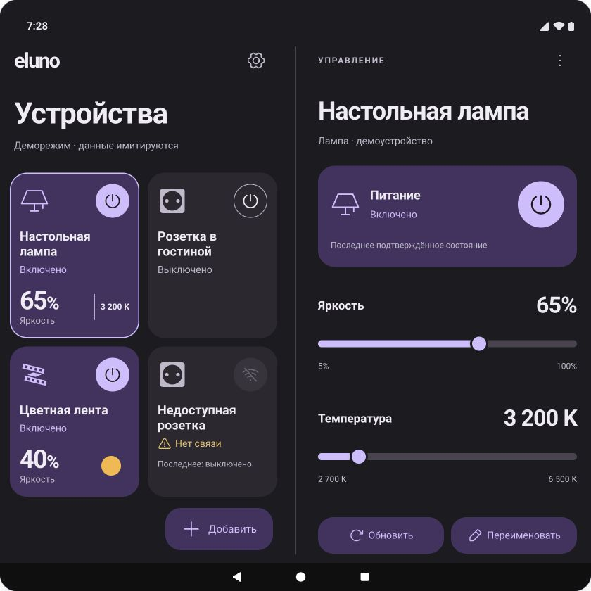